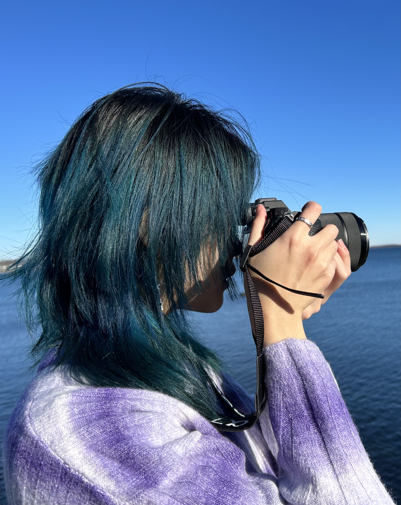

About

YixinLi
AboutMe
Know more
Hi there, I'm Yixin Li!
I am an aspiring product manager, a software engineer, and a Computer Science and Philosophy double major at Colby College.
Skills
My Skills
Skills & Expertise
Skills
1 - Data Collection and Analysis
- Qualtrics
- Excel
- Python (Numpy, Pandas, Matlibplot, scikit-learn..)
- R
- MySQL
2 - Frontend Development
- HTML / CSS
- JavaScript
3 - Backend Development
- Python
- Java
- C
4 - Design, Photography, and Videography
- Figma
- Adobe Suite (Premiere, After Effects, Photoshop, Lightroom)
- Canva
- Blender
Works
Portfolio
Done Projects
Portfolio
Fix8: A Python GUI tool
Research Project
Virtual Reality: Visualization of Wind Turbines
Research Project
Integrate Human Features into Machine Learning
Research Project
Colby Dining App
Full-Stack Software Project
Architectural Design: Colby Mindfulness Center
Design Project
Experience
Experience
Learn About My Experience
My Experience
CS Research Assistant @Colby College
Oct 2023 - Present
- Iteratively improved Fix8's UI, an eye-tracking data correction tool, using PyQt5 based on user feedback.
- Conducted 10+ user studies to compare two methods of eye-tracking data correction, guiding non-technical participants through setups and performing data cleaning and analysis.
- Authored 40-page documentation and benchmarked 4 existing eye-tracking fixation correction tools.
- Developed and tested experimental setups using PyGaze to investigate trust in LLMs.
Data Analytics Volunteer @United Way of Kennebec Valley
Sept 2024 - present
- Researched, collected, and analyzed health, finance, and education data using Python to inform an annual report.
- Designed a marketing-focused informatics one-pager in Canva to visualize key indicators.
CS Summer Research Assistant @Colby College
May 2024 - Aug 2024
- Designed and implemented Qualtrics surveys to explore human feature space and trust in AI in given scenarios, gathering insights from 200+ respondents.
- Analyzed and visualized survey results using Python libraries (pandas, numpy, statsmodels, matplotlib) to guide research decisions.
- Curated and preprocessed data from 20+ public datasets using scikit-learn for semantic clustering.
- Optimized model by performing feature selection with multiple filter methods, achieving improved AUC scores.
CS Research Assistant @Colby College
May 2024 - Present
- Designed 3D seafloor models of the Gulf of Maine in Blender and integrated them into VR in Unity.
- Prepared IRB materials for conducting interviews to explore challenges faced by blind and low-vision professionals working with data; planning to lead the interviews in spring.
- Utilized NLP to evaluate word frequency and sentiment of interview transcripts to identify spatial proposition.